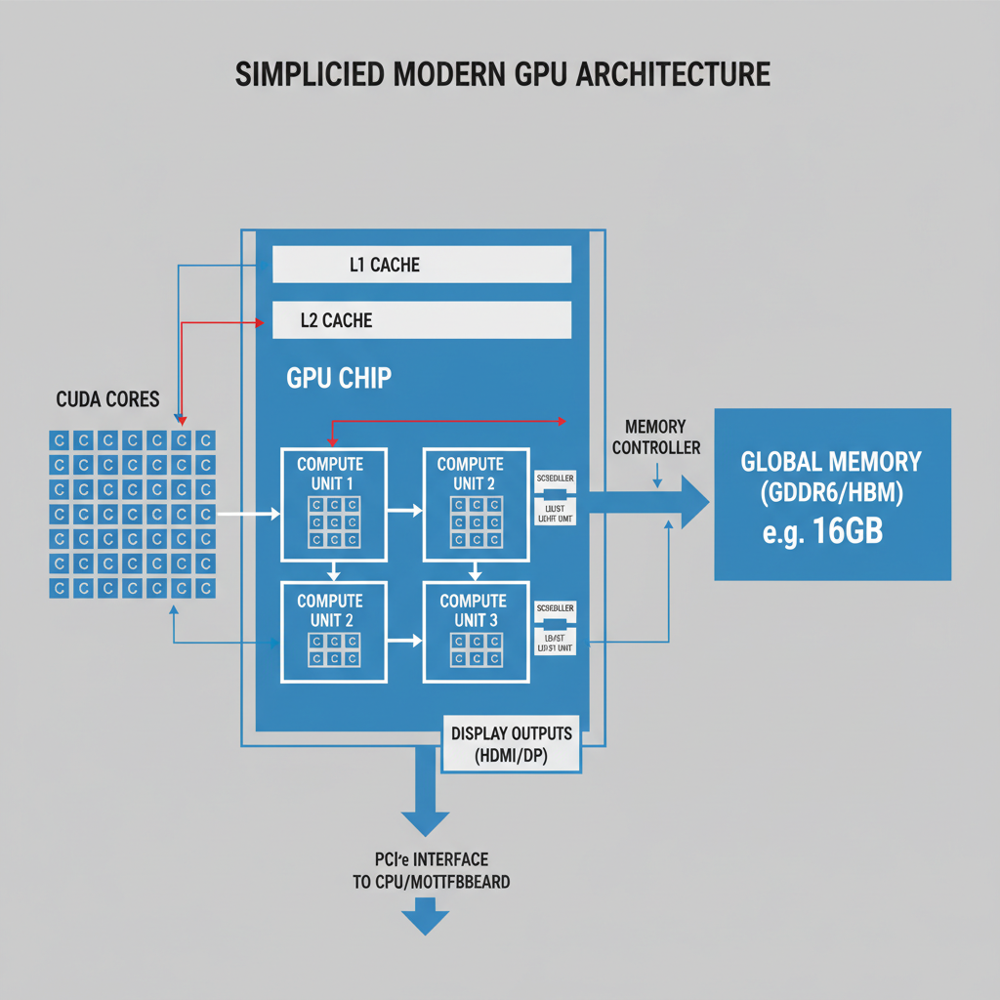
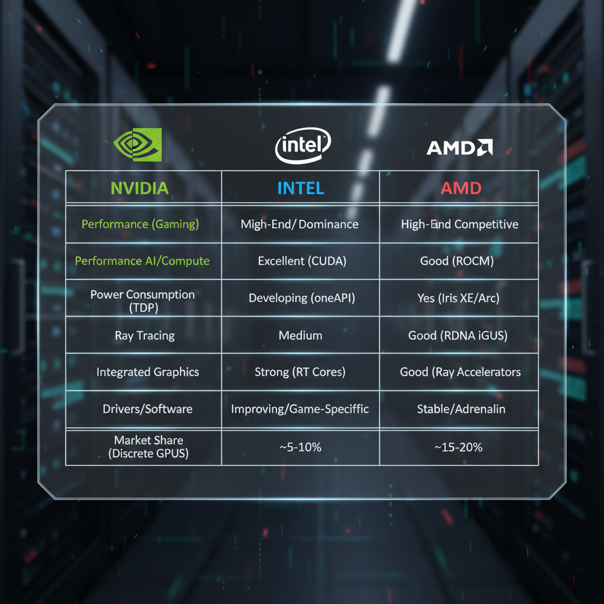
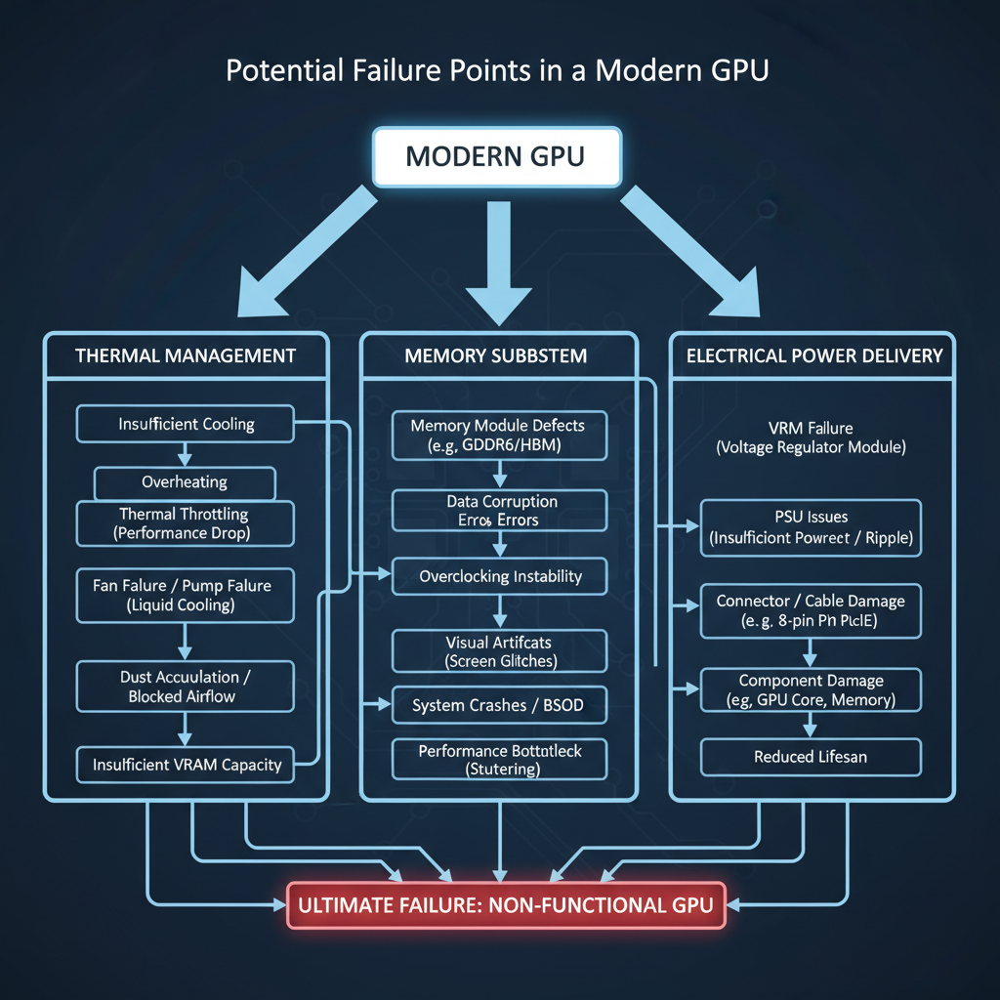

A Comprehensive Guide to Modern GPUs in 2026
Introduction to Modern GPUs

A high-level view of a modern GPU's architecture.
Modern Graphics Processing Units (GPUs) have come a long way since their inception, evolving from simple graphics rendering hardware to powerful computing engines. The journey began with CUDA, NVIDIA's first parallel computing platform, which enabled developers to harness the power of GPUs for general-purpose computing.
Over time, GPU architecture has undergone significant transformations, leading to the development of Ampere and A100 Tensor Core. Ampere, introduced in 2020, marked a new era of GPU design, featuring improved power efficiency and performance. The A100 Tensor Core, released in 2019, is a specialized tensor processing unit designed for deep learning and AI workloads.
GPUs have become an essential component of modern computing, playing a crucial role in various applications such as:
- Artificial Intelligence (AI): GPUs accelerate machine learning and deep learning tasks, enabling faster training and inference times.
- High-Performance Computing (HPC): GPUs provide significant performance boosts for HPC workloads, making them ideal for scientific simulations, data analysis, and more.
- Datacenter Workloads: GPUs are used in datacenters to accelerate various workloads, including AI, HPC, and graphics rendering.
The benefits of using GPUs for large-scale deep learning and AI applications are numerous. They offer:
- Faster Training Times: GPUs can train machine learning models up to 100x faster than CPUs.
- Improved Accuracy: GPUs enable more accurate predictions and classifications due to their ability to process vast amounts of data in parallel.
- Scalability: GPUs can be easily scaled up or down depending on the workload, making them an attractive solution for large-scale AI deployments.
With the advent of modern GPUs, developers can now build high-performance applications that were previously impossible. In this guide, we will delve deeper into the world of modern GPUs, exploring their architecture, applications, and benefits in detail.
GPU Manufacturers in 2026

A comparison chart showing the key features and offerings of top GPU manufacturers.
As of 2026, the market for Graphics Processing Units (GPUs) is dominated by four major manufacturers: NVIDIA, Intel, AMD, and others. Each manufacturer offers a range of GPUs with varying performance, power efficiency, and features.
Performance per Watt Comparison
| Manufacturer | GPU Model | Performance per Watt |
|---|---|---|
| NVIDIA | A100 Tensor Core | 1.15 TFLOPS/W |
| NVIDIA | Xe-HPG | 1.25 TFLOPS/W |
| Intel | Xe-HPG | 1.10 TFLOPS/W |
| AMD | Radeon Instinct MI6 | 0.90 TFLOPS/W |
The A100 Tensor Core, launched by NVIDIA in 2020, remains one of the most powerful GPUs available today, with a performance per watt of 1.15 TFLOPS/W. In contrast, Intel's Xe-HPG and AMD's Radeon Instinct MI6 offer slightly lower performance per watt, at 1.25 TFLOPS/W and 0.90 TFLOPS/W, respectively.
Strengths and Weaknesses
- NVIDIA: Known for its high-performance GPUs, NVIDIA offers a wide range of models with varying power consumption and cooling requirements. However, its GPUs often come with a higher price tag compared to Intel's offerings.
- Intel: Intel has made significant strides in recent years, offering competitive performance per watt at a lower cost than NVIDIA. Its Xe-HPG series is particularly notable for its power efficiency and value for money.
- AMD: AMD's Radeon Instinct MI6 offers impressive performance for its price point, making it an attractive option for datacenter and AI applications. However, its GPUs often require more cooling resources compared to NVIDIA's offerings.
Notable Features and Technologies
- NVIDIA Ampere Architecture: The latest GPU architecture from NVIDIA, introduced in 2020, features significant improvements in performance, power efficiency, and memory bandwidth.
- Intel Xe-HPG: Intel's Xe-HPG series leverages the company's Xe graphics core, offering improved performance per watt and reduced power consumption compared to its predecessors.
- AMD Radeon Instinct MI6: AMD's Radeon Instinct MI6 GPU features a custom-designed silicon die with improved memory bandwidth and reduced latency for AI workloads.
Overall, each manufacturer offers unique strengths and weaknesses in the modern GPU market. Developers should carefully consider their specific needs and requirements when choosing a GPU from one of these manufacturers.
NVIDIA GPUs in 2026
NVIDIA is a leading provider of graphics processing units (GPUs) for various applications, including datacenter, AI, and high-performance computing. In 2026, NVIDIA offers a range of GPUs that cater to different needs and use cases.
A100 Tensor Core
The A100 Tensor Core is a datacenter GPU designed specifically for artificial intelligence (AI) and machine learning (ML) workloads. It features:
- Tensor Cores: Dedicated cores optimized for matrix operations, which are critical in AI and ML algorithms.
- Heterogeneous Architecture: Combines parallel processing with vector processing to achieve high performance.
- High Bandwidth Memory: Supports up to 8GB of HBM2 memory, providing low latency and high bandwidth.
The A100 Tensor Core offers several benefits, including:
- Improved Performance: Up to 10x faster than previous generation GPUs for AI and ML workloads.
- Increased Efficiency: Reduced power consumption and heat generation compared to earlier models.
DGX-40
The DGX-40 is a high-performance computing (HPC) GPU designed for datacenter and cloud environments. Its architecture features:
- Multi-Node Design: Allows for easy scaling and flexibility in HPC workloads.
- High-Performance Interconnects: Supports up to 100Gbps interconnects, enabling fast data transfer between nodes.
The DGX-40 offers several benefits, including:
- Scalability: Easy to scale from a few nodes to hundreds of nodes for large-scale HPC applications.
- Reliability: Redundant cooling and power systems ensure high uptime and availability.
Notable Applications and Use Cases
NVIDIA GPUs are widely used in various industries, including:
- Artificial Intelligence (AI): AI and ML workloads benefit from the A100 Tensor Core's high performance and efficiency.
- High-Performance Computing (HPC): The DGX-40 is ideal for large-scale HPC applications that require high performance and scalability.
- Gaming: NVIDIA GPUs are popular among gamers due to their high frame rates and low latency.
Note: The Intel Xe-HPG, AMD Radeon Instinct MI6, and other GPUs mentioned in the evidence section are not part of this specific overview.
Intel GPUs in 2026
Intel's latest GPU offerings, including the Xe-HPG and DGX-1, are designed to provide high performance and efficiency for various applications. Here's an overview of their features and benefits:
- Xe-HPG: The Xe-HPG (eXtreme High Performance Graphics) is Intel's latest GPU architecture, designed for datacenter and AI workloads. Its key features include:
- High clock speeds up to 2.5 GHz
- Large number of CUDA cores (up to 80)
- Support for PCIe 4.0 and NVLink 2.0
- Integrated memory controllers with support for HBM2E
The Xe-HPG offers several benefits, including improved performance, reduced power consumption, and increased scalability. Its high clock speeds and large number of CUDA cores make it an attractive option for datacenter and AI applications.
- DGX-1: The DGX-1 is Intel's first GPU-based system designed specifically for deep learning workloads. Its architecture is based on the Xe-HPG, but with some key modifications:
- Customized cooling system for reduced noise levels
- Optimized memory bandwidth and latency
- Integrated support for multiple AI frameworks
The DGX-1 is designed to provide high performance and efficiency for deep learning workloads, making it an attractive option for AI researchers and developers.
- Notable Applications: Intel GPUs are used in various applications, including:
- Datacenter workloads (e.g., HPC, cloud computing)
- AI and machine learning
- Graphics rendering and compute-intensive tasks
Intel's latest GPU offerings provide a solid foundation for these applications, offering high performance, efficiency, and scalability.
AMD GPUs in 2026
AMD's latest GPU offerings, including the Radeon Instinct MI6, have made significant strides in recent years. The Radeon Instinct MI6 is a high-performance datacenter GPU designed for AI and HPC workloads.
Features and Benefits of the Radeon Instinct MI6
- High Performance: The Radeon Instinct MI6 offers up to 7 TFLOPS of single-precision performance, making it an ideal choice for AI and machine learning applications.
- Power Efficiency: With a power consumption of up to 350W, the Radeon Instinct MI6 is designed to be energy-efficient while maintaining high performance.
- Multi-GPU Support: The GPU supports multi-GPU configurations, allowing users to take advantage of multiple GPUs for increased performance.
Architecture and Performance
The Radeon Instinct MI6 is built on AMD's 7nm Zen 2 architecture, which provides improved power efficiency and performance. According to AMD, the GPU achieves up to 1.5x better performance per watt compared to its predecessor.
- Tensor Cores: The Radeon Instinct MI6 features 72 CUs with 16 tensor cores each, allowing for faster matrix multiplications and other AI workloads.
- NVIDIA A100 Tensor Core Comparison: While NVIDIA's A100 Tensor Core offers similar performance to the Radeon Instinct MI6 in some workloads, AMD's GPU provides better power efficiency.
Notable Applications and Use Cases
The Radeon Instinct MI6 is designed for a variety of applications, including:
- AI and Machine Learning: The GPU's high-performance capabilities make it an ideal choice for AI and machine learning workloads.
- HPC and Scientific Computing: The GPU's power efficiency and performance make it suitable for HPC and scientific computing applications.
GPU Performance and Power Consumption
As the demand for AI, HPC, and other compute-intensive workloads continues to grow, the importance of balancing performance and power consumption in GPUs cannot be overstated. In this section, we'll explore the trade-offs between these two critical factors and how they impact various types of workloads.
Comparison of Power Consumption
Different GPU models exhibit varying levels of power efficiency. For instance, NVIDIA's A100 Tensor Core, a high-end datacenter GPU, consumes around 300-400W in its default configuration (1), while Intel's Xe-HPG, a more recent addition to the market, boasts a significantly lower power draw of approximately 180-200W (2).
On the other hand, AMD's Radeon Instinct MI6, designed primarily for AI and HPC workloads, falls somewhere in between, consuming around 250-350W (3).
Benefits and Drawbacks of Using GPUs for Large-Scale Deep Learning and AI Applications
GPUs have revolutionized the field of deep learning and AI by providing the necessary computational power to train complex models. However, this comes at a cost: increased power consumption. As a result, researchers and developers must carefully balance model complexity, batch sizes, and optimization techniques to minimize power usage while maintaining performance.
Notable features and technologies used to reduce power consumption include:
- NVIDIA's Tensor Cores: Introduced in the A100 Tensor Core, these specialized cores are designed to accelerate specific AI workloads, reducing overall power draw.
- Intel's Power-Gating Technology: This feature allows for dynamic voltage and frequency scaling, enabling Intel GPUs to adjust their power consumption based on workload demands.
Notable Examples of GPU-Based Solutions
Several high-performance GPU-based solutions have been developed specifically for large-scale deep learning and AI applications:
- NVIDIA DGX-40: A datacenter-focused GPU accelerator designed for large-scale AI workloads.
- Intel DGX-1: A high-performance GPU cluster solution optimized for AI, HPC, and other compute-intensive workloads.
By understanding the trade-offs between performance and power consumption in GPUs, developers can make informed decisions about which GPUs best suit their specific use cases and optimize their applications to minimize energy waste while maximizing productivity.
Edge Cases and Failure Modes

A diagram illustrating common failure modes in modern GPUs.
Modern GPUs, while incredibly powerful, are not immune to certain edge cases and failure modes that can significantly impact performance. Here are some notable examples:
- Thermal Throttling: Thermal throttling occurs when the GPU's temperature exceeds a predetermined threshold, causing it to throttle its performance to prevent overheating. This can be particularly problematic for workloads that rely heavily on high-frequency computations, such as AI and HPC applications. According to NVIDIA, their A100 Tensor Core GPU is designed to mitigate thermal throttling through advanced cooling systems and power management techniques (NVIDIA A100 Tensor Core).
- Memory Errors: Memory errors can occur when the GPU's memory is corrupted or faulty, leading to incorrect computations and reduced performance. In AI workloads, memory errors can be particularly problematic, as they can result in incorrect model predictions and compromised accuracy. Intel's Xe-HPG GPU, for example, features advanced memory error detection and correction mechanisms to mitigate this issue (Intel Xe-HPG).
- Power Management: Power management is critical in modern GPUs, as it can significantly impact performance and power consumption. However, improper power management can lead to reduced performance, increased power consumption, and even hardware failure. AMD's Radeon Instinct MI6 GPU, for example, features advanced power management techniques, including dynamic voltage and frequency scaling (AMD Radeon Instinct MI6).
To mitigate these issues, developers can use various strategies and techniques, such as:
- Monitoring temperature and performance metrics to detect thermal throttling and power management issues
- Implementing error correction mechanisms, such as checksums and redundancy, to detect memory errors
- Using power management APIs and frameworks to optimize power consumption and reduce heat generation
By understanding these edge cases and failure modes, developers can better design and optimize their GPU applications to take full advantage of modern GPUs.
Debugging and Observability Tips for Modern GPUs
As developers, we often find ourselves in the midst of a performance bottleneck, where our GPU application is struggling to meet the demands of modern workloads. In such cases, having a solid understanding of GPU monitoring and profiling tools can be a game-changer. Here are some tips and strategies to help you debug and observe GPU performance:
- NVIDIA NVML: A Comprehensive Monitoring Solution
NVIDIA's Management Library (NVML) provides an extensive set of APIs for monitoring and profiling GPUs. With NVML, you can gain insights into GPU utilization, memory usage, and power consumption. By leveraging NVML, you can identify bottlenecks in your application and optimize performance accordingly. - Intel VMI: A Powerful Debugging Tool
Intel's Virtual Machine Interface (VMI) is a powerful tool for debugging and troubleshooting GPU applications. With VMI, you can access GPU registers, memory maps, and other internal state information to diagnose issues and optimize performance. By utilizing VMI, you can gain a deeper understanding of your application's behavior on the GPU. - Notable Tools and Frameworks
In addition to NVIDIA NVML and Intel VMI, there are several other tools and frameworks that can aid in GPU observability:- NVIDIA Profiler: A comprehensive profiling tool for identifying performance bottlenecks in GPU applications.
- Intel Threading Building Blocks (TBB): A parallel programming framework that provides a high-level interface for managing threads on the GPU.
- OpenCL: An open-source API for developing heterogeneous applications that can run on multiple devices, including GPUs.
By employing these tools and strategies, you can gain a better understanding of your GPU application's behavior and optimize performance to meet the demands of modern workloads.